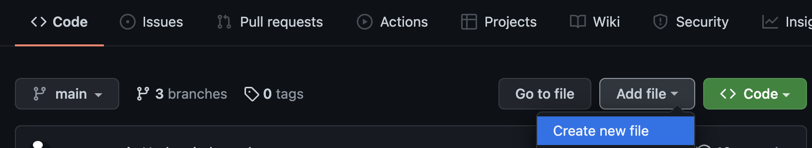
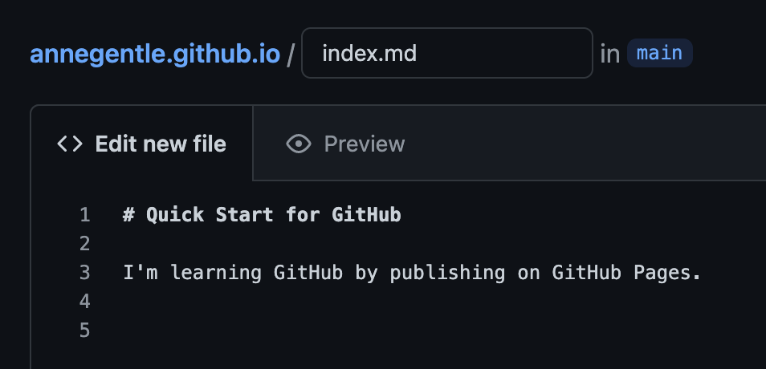
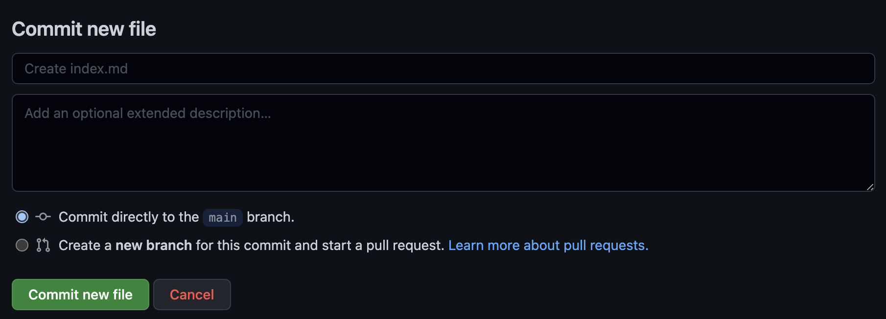
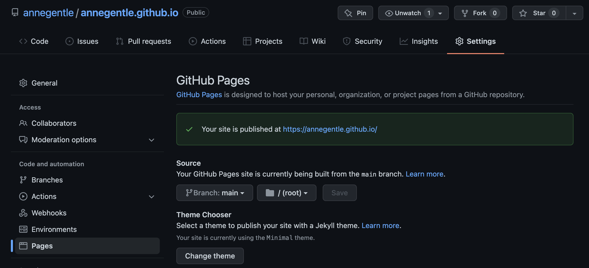

Quick Start with GitHub Pages
The fastest way to get started with docs-as-code with a web browser, internet connection, and GitHub account:
- Create a GitHub account at [github.com](https://github.com). Refer to [GitHub Pro Account or GitHub Free Account for Technical Writing](https://justwriteclick.com/2019/01/14/github-pro-account-or-github-free-account-for-technical-writing/) if you're wondering which pricing plan makes sense for you. Free is likely fine!
- In your browser, create a repository with the same name as your GitHub username, followed by "github.io". For example, my repository name is "annegentle.github.io".
- On the repository's main page, on the Code tab, click Add file > Create new file. 
- In the Name your file... field, enter "index.md" and under Edit new file, add a line or two of text that you want to publish as your new web landing page. 
- Add a message if you like, and click Commit new file. 
- Wait just a few seconds, then go to your new page, https://username.github.io.
If you don't see a page, you want to check the settings for GitHub Pages by going to the Settings tab for the repository, and then click Pages in the left-hand side. The Settings should look similar to these: 